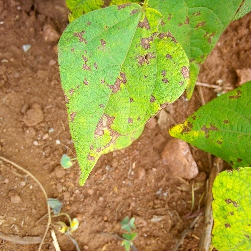
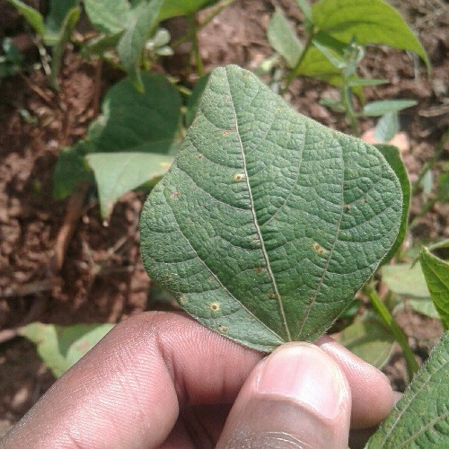
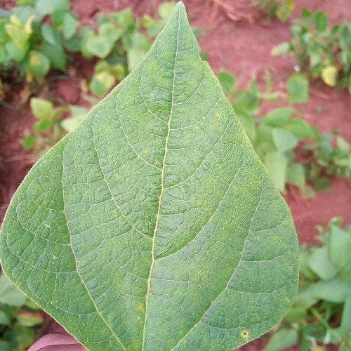

같은 잎, 다른 이웃
300장을 네 가지 DataLens로 봅니다. 렌즈를 바꾸면 가까운 이미지와 H의 선택 결과도 달라집니다.
EXECUTIVE SUMMARY / 핵심 요약
우간다 밭에서 촬영한 강낭콩 잎을 통해, 신경망이 만든 이미지의 관계와 데이터 선택의 근거를 살펴봅니다. 모델을 소개하는 페이지이자, 실제 사진과 고차원 수치를 오가는 연구 워크벤치입니다.
300장을 네 가지 DataLens로 봅니다. 렌즈를 바꾸면 가까운 이미지와 H의 선택 결과도 달라집니다.
3장의 실제 중간 텐서와 6장의 패치 유사도를 탐색합니다. 차이가 변하는 지점을 볼 수 있지만, 그것이 곧 ‘병을 알아본 순간’은 아닙니다.
DINOv3-L 공간에서 300→120장 선택 시 H의 균형 정확도는 클래스 수를 맞춘 무작위 선택보다 높았습니다. 이 조건의 결과이며 모든 렌즈·데이터에 일반화하지 않습니다. 조건과 불확실성 보기
읽는 기준: 실제 이미지·임베딩·층별 값은 실측 자료입니다. Gram·EMA 도표는 합성 원리 실험입니다. 유사도 지도는 attention이나 인과적 설명이 아니며, 이 웹은 작물 진단 서비스가 아닙니다.
데이터가 만들어진 이유와 사진 밖의 맥락을 알아야, 임베딩의 분리를 올바르게 읽을 수 있습니다.
Makerere AI Lab과 우간다 국립작물자원연구소(NaCRRI)가 우간다 여러 지역의 밭에서 스마트폰으로 수집했습니다. NaCRRI 전문가가 수집 현장에서 잎의 상태를 분류했습니다. 2020년 공개된 원 프로젝트의 목표는 농민이 현장에서 사용할 수 있는 강건한 모바일 병해 분류 모델입니다.
여기서 beans는 대두가 아니라 common bean, 강낭콩류(Phaseolus vulgaris)입니다. 잎의 병반, 잎맥, 색과 질감뿐 아니라 배경·조명·촬영 각도도 함께 담긴 현장 사진입니다.
출처: TensorFlow Datasets · 현재 이미지 명세 · 현재 실험 프로토콜
버전 주의: 원저자 README의 클래스 수 합계는 1,296장입니다. 배포 카탈로그의 1,295장과 1장 차이가 있으며, 이번 작업에서 그 원인은 확인하지 못했습니다.
공개 병해 이미지 분류 벤치마크로 사용됩니다. 예를 들어 2025년 Frontiers in Plant Science 연구는 iBean 1,295장으로 주파수 기반 전처리와 Transformer 병해 분류를 평가했습니다. 우리는 새 진단 모델의 순위를 매기기보다, 고정된 임베딩 공간·층별 표현·H 표본 선택이 어떻게 달라지는지 연구합니다. 외부 논문의 성능은 분할과 평가 조건이 달라 직접 비교하지 않습니다.
아래는 기존 최종 임베딩 공간에서 선정한 설명용 중심 사례입니다. 클래스 전체의 대표성을 입증하거나 사진만으로 병원체를 확진한 예시는 아닙니다.

#094 / ANGULAR LEAF SPOT
Pseudocercospora griseola라는 곰팡이가 원인입니다. 잎맥에 막혀 각진 회갈색 병반이 생길 수 있고, 병이 심해지면 잎이 일찍 떨어져 생산에 영향을 줍니다. 같은 이름의 오이 세균병과는 다릅니다.
관찰 질문: 가까운 이웃도 병반의 형태를 공유할까요, 아니면 잎·배경의 색이 더 비슷할까요?

#183 / BEAN RUST
Uromyces appendiculatus라는 곰팡이가 원인입니다. 작게 솟은 적갈색 포자 덩어리와 노란 테두리가 특징이며, 심한 감염은 잎의 건조·조기 낙엽과 꼬투리·종실 발달 저하로 이어질 수 있습니다.
관찰 질문: 작은 점의 질감은 패치와 층에 따라 어떻게 표현될까요? 유사도만으로 모델의 판단 이유를 확정할 수는 없습니다.

#256 / HEALTHY
수집·주석 과정에서 건강으로 분류된 잎입니다. 비교 기준이 되지만, 잠복 감염이나 사진 밖의 문제까지 없다는 실험실 검사 결과는 아닙니다. 세 라벨은 현장의 모든 병해를 포괄하지 않습니다.
관찰 질문: 건강한 잎끼리도 왜 거리가 다를까요? 모양·잎맥·조명·배경 같은 변화도 살펴보세요.
사진은 기존 원본입니다. 탐색 데이터가 준비되면 표본 선택 버튼이 활성화됩니다.
현재 확인된 강점은 전문가 주석, 균형 잡힌 300장, 그리고 기존 특징 공간의 분별 신호입니다. 다만 균형이나 높은 분류 성능만으로 ‘오라벨·중복·누수가 없는 데이터’라고 말할 수는 없습니다.
현재 명세의 300장 원본과 클래스 수를 확인했습니다. 고유한 파일과 해시는 이미지 식별 근거이지, 서로 닮은 촬영본이 없다는 보증은 아닙니다.
품질 HTML은 분별성 92.19%·밀도 0.393±0.122·GOOD을, Govern 보고서는 DINOv2-base 분별성 93.75%·5-fold CV 89.72±2.25%를 기록합니다. 현재 DINOv3의 품질 점수로 치환하지 않습니다.
촬영 농가·식물 개체의 독립성, 유사 촬영본의 분할 누수, 전문가 간 주석 일치도, 배경 편향은 이번 작업에서 새로 검증하지 않았습니다. 질병 부위를 실제로 사용하는지는 추가 실험이 필요합니다.
Govern의 라벨 셔플 30회 평균은 35.89%, 보고된 p값은 0.0323입니다. 이는 해당 검사에서 라벨과 특징의 연관 신호가 있다는 근거이며, 모든 누수 가능성을 배제하지 않습니다. 원시 반복 실행은 이번에 재현하지 않았습니다.
현재 저장된 cross-eval JSON의 DINOv2-base 자체 공간에서는 300장 93.75%, 253장 선택 92.19% 대 무작위 95.31%(차이 −3.12%p)입니다. 2026-08-15 권고는 유지 비율 0.843·BAD/caution을 기록합니다. 과거 품질 HTML의 ‘85.7% 감량 여력·GOOD’과 하나의 일관된 권고로 합칠 수 없습니다.
이 cross-eval은 기존 감사 기록상 로지스틱 회귀·accuracy·단일 무작위 선택 조건입니다. 아래의 MLP·균형 정확도·반복 seed·클래스 수를 맞춘 H 실험과는 다른 실험입니다. 두 기록의 300장이 현재 웹과 파일 단위로 같은 집합인지는 미확인입니다.
또한 2026-07-10 정정 원장은 일부 beans 파생셋의 ‘lens_diet’ 표기가 실제 층화 무작위 절삭이었다고 정정합니다. 그 결과를 정밀 H 선택의 증거로 가져오지 않습니다. 이번 변경은 운영 데이터나 과거 기록을 덮어쓰지 않습니다.
2026-09-25 로컬 기록 대조 · 파일 해시·값·제약을 담은 근거 원장 · 전체 Markdown 보고서
점이나 이웃 이미지를 선택하면
원본과 상세 정보가 함께 바뀝니다.
좌표는 렌즈별 L2 정규화 → 중심화 → PCA. 선은 원공간에서 정확히 계산한 상위 8개 cosine 이웃입니다. 3D 거리와 원공간 거리는 같지 않으며, 렌즈 간 축도 정렬하지 않았습니다.
데이터를 불러오지 못했습니다. 페이지를 새로고침해 주세요.
이미지 쌍과 단계를 바꾸며 실제 숫자가 달라지는 과정을 확인합니다. 학습을 마친 모델의 관측값이며, 새로 학습하는 과정이 아닙니다.
#094 모무늬병 · #183 녹병 · #256 건강. 최종 임베딩 공간에서 고른 클래스별 중심 설명 사례이며, 클래스 전체를 대표하는 증거가 아닙니다.
거리 = 1 − cosine. 원래 1024차원에서 계산합니다. 인접 단계 차이 Δ의 최대 증가·감소 구간을 표시합니다. 유일한 ‘인식 시작 층’이나 통계적 유의성을 뜻하지 않습니다. 선을 누르면 해당 단계로 이동합니다.
패치 지도는 두 이미지의 같은 격자 위치를 비교합니다. 같은 잎 부위라는 보장은 없습니다. attention이나 인과적 설명이 아니며, 아래의 ‘한 이미지 내부 패치 유사도’ 및 ‘합성 Gram 실험’과 분석 대상이 다릅니다. 기존 3D는 최종 CLS의 보조 투영입니다. 층마다 별도로 만든 3D 좌표를 연결하지 않았습니다.
6장의 실제 이미지에서 패치 특징을 추출했습니다. 아래 표본을 선택하면 위 3D 탐색기도 같은 이미지로 이동합니다. 전처리 이미지의 한 칸을 눌러, 다른 영역과의 패치 특징 유사도를 확인하세요.
이 지도는 attention 가중치나 인과적 설명이 아닙니다. 특정 패치가 분류 결과를 일으켰다는 뜻도 아닙니다.
클래스별 중심부 1장 + 주변부 1장. 기존 DINOv3 CLS 공간에서 같은 클래스 평균과의 유사도가 가장 높은/낮은 표본입니다. 통계적 대표성이나 오라벨을 뜻하지 않습니다.
원본 JPEG를 변경 없이 보존했습니다.
16 × 16 픽셀 단위 · 클릭 또는 방향키로 선택
색 눈금은 모든 이미지·패치에서 −1~+1로 고정
기준 패치 자신은 cosine = 1. 아래 가까운 패치 목록에서는 제외합니다.
RGB 원본 → 1/255 스케일링 → bilinear·antialias 224×224 리사이즈 → ImageNet 채널 정규화 → 고정 ViT-L 추론 → CLS·register 5개 제외 → 패치별 L2 정규화 → cosine 내적.
잘라내기(crop)는 없습니다. 표시한 입력 이미지는 모델 입력 텐서의 채널 정규화를 되돌리고 8비트 PNG로 저장한 것입니다. 원본 500×500 전체와 대응하며, 픽셀 좌표는 크기 비율에 따라 바뀝니다.
여기는 학습 완료 모델의 실제 특징입니다. 아래의 합성 Gram 실험은 관계 보존의 수학을 설명하는 별도 모형입니다. 이 6장으로 Gram anchoring의 학습 전후 효과를 측정한 것은 아닙니다.
ViT는 이미지를 작은 패치로 나눕니다. 각 패치를 벡터로 바꾼 뒤, self-attention으로 서로의 정보를 섞습니다. 패치 출력은 더 이상 그 조각의 픽셀만이 아니라, 전체 문맥을 함께 담습니다.
CLS는 이미지 전체를 요약하는 학습된 토큰입니다. ViT-L에서는 1,024차원의 이미지 표현을 얻습니다.
Attention(Q, K, V)
= softmax(QKᵀ / √dk) V
각 토큰은 Q(질문), K(주소), V(전달할 내용)를 만듭니다. Q와 K가 결정한 가중치로 V를 모아 표현을 갱신합니다. RoPE는 위치에 따라 Q·K를 회전시켜 상대적 공간 관계를 반영합니다.
표준 attention의 개념식입니다. DINOv3의 세부 위치 처리와 정규화는 공식 구현을 따릅니다. Attention 가중치가 곧 인과적 설명인 것은 아닙니다.
근거: 공식 ViT 구현 ↗패치 수는 면적에 비례하고, 토큰 간 attention 관계는 N²으로 늘어납니다. 아래는 실행시간이 아닌 관계 수의 계산입니다.
학생은 서로 다르게 자른 이미지를 봅니다. 교사는 더 넓은 시야를 제공합니다. 학생이 맞추는 것은 ‘콩잎’이라는 정답 이름이 아니라, 교사의 학습용 헤드가 만든 확률분포입니다.
자기증류 사전학습에서는 학생의 가중치를 바로 복사하지 않고, 교사 가중치에 조금씩 섞습니다. EMA는 목표의 급격한 흔들림을 줄입니다.
EMA만으로는 모든 이미지가 같은 벡터가 되는 ‘붕괴’를 막기에 충분하지 않습니다. 목표 분포의 균형화(Sinkhorn–Knopp), 온도 조절, KoLeo 정규화 등이 함께 작동합니다.
160단계의 합성 1차원 궤적입니다. 실제 훈련 로그가 아닙니다. m이 클수록 변화가 부드러워지고 반응은 늦어집니다. 논문의 대규모 사전학습 설정은 m = 0.999입니다.
사진 전체를 잘 분류한다고 모든 부분을 잘 이해하는 것은 아닙니다. DINOv3의 Gram anchoring은 패치 쌍의 유사도 구조를 참조 교사에 맞추어, 장기 학습 중 무너질 수 있는 국소 표현을 보완합니다.
12개 패치를 6차원 벡터로 가정했습니다. 교란을 키우고, 참조 벡터로 되돌리는 양을 조절해 보세요.
보간은 설명용 조작이며 실제 최적화 과정이나 loss 가중치가 아닙니다. 회전 전후의 Gram 오차는 같습니다.
가로·세로 축은 패치 번호 0–11. 대각선은 자기 자신과의 유사도 1입니다.
F의 각 행은 L2 정규화한 패치 벡터입니다. 좌표계를 회전해 FQ로 바꾸어도 Q가 직교 행렬이면 (FQ)(FQ)ᵀ = FFᵀ입니다. 즉, 표현이 움직일 자유를 남기면서 관계의 구조를 보존할 수 있습니다.
이 행렬은 한 이미지 내부 패치들의 관계입니다. 맨 위의 ‘300장 이미지 사이의 이웃 그래프’와는 분석 단위가 다릅니다. 위 실험은 논문 개념식의 평균제곱 형태를 사용하며, 공식 구현의 음수 유사도 제거 등 선택 옵션은 적용하지 않습니다.
근거: 논문 §4 · GramLoss 구현 ↗대규모 ViT-7B 교사의 표현을 작은 모델에 증류합니다. 우리가 사용한 ViT-L의 1,024차원은 이미지 벡터의 길이이지, 모델의 파라미터 수가 아닙니다.
학생 + EMA 교사
DINO · iBOT · KoLeo
별도의 Gram 교사 참조
패치 간 관계 보완
고정된 7B 교사 → S / B / L / H+
작은 모델에 Gram loss를 그대로 재적용하는 것은 아님
| ViT 모델 | 파라미터 | 임베딩 차원 |
|---|---|---|
| S | 21M | 384 |
| S+ | 29M | 384 |
| B | 86M | 768 |
| L ← 이번 실험 | 300M | 1,024 |
| H+ | 840M | 1,280 |
| 7B | 6,716M | 4,096 |
M = 백만 파라미터. 모델 카드의 반올림 수치입니다. ViT 계열은 패치 크기 16, register 4개를 사용합니다. 별도의 ConvNeXt 계열도 제공됩니다.
모델 카드 ↗기존 beans 실험에서 300장 중 120장을 남겼습니다. H와 같은 클래스 구성의 무작위 선택을 비교하자, 평가에 사용하는 렌즈에 따라 차이가 달랐습니다. 이 결과는 DINOv3 전체의 우열 순위가 아닙니다.
점은 평균, 선은 95% 교차 부트스트랩 구간입니다. 같은 렌즈로 선택하고 평가한 self-space 결과. 선택 seed 3개 × 학습 seed 3개, 10,000회 재표집. raw 특징을 입력으로 하는 MLP로 평가했으며, held-out 128장 중 검증 65장·최종 평가 63장을 사용했습니다. 구간은 테스트 표본이나 데이터셋 간 불확실성을 모두 나타내지는 않습니다.
DINOv3-L의 평균 차이는 +3.35%p입니다. 그러나 선택 결과를 다른 렌즈에서 평가한 경우에는 음의 차이도 있었습니다. ‘Gram anchoring 때문에 H가 좋아졌다’는 인과적 주장은 이 실험만으로 할 수 없습니다.
점이 가까워 보인다는 인상에서 멈추지 않고, 어떤 표현과 거리, 어떤 선택 규칙이 결과를 만들었는지 돌아갈 수 있어야 합니다.
이미지 ID · 전처리
모델 revision · 토큰 정책
FAISS 후보 생성
정식 H 커널로 재정렬
OOF hardness · 밀도
경계 · 중복 · 보호 규칙
보존 / 제거 이력
무작위 대조 · 교차 렌즈 평가
연구 워크벤치가 추적해야 할 개념적 증거 사슬입니다. 이 교육용 리포트는 고차원 cosine 이웃과 저장된 선택 결과를 보여 주며, FAISS/H 재실행이나 개별 결정의 전체 근거 추적 기능을 구현한 것은 아닙니다.
Pebblous가 개발하는 PebbloScope의 API 저장소에서는 데이터셋 카탈로그, 2D/3D PCA 시각화 자산, 노드 미리보기, 색 매핑, 스냅샷 기능을 확인했습니다. 범용 공간 탐색은 이 계층을 재사용하고, Data Clinic 연구 워크벤치는 H의 의사결정·실험 근거를 책임지는 구분이 적절합니다.
검토 기준: 저장소 로컬 체크아웃 d39926d. 실제 서비스의 현재 배포 API와 동일하다고 검증한 것은 아닙니다. 이 리포트는 교육용 독립 산출물이며 PebbloScope나 기존 Data Clinic의 운영 기능을 대체·수정하지 않습니다.
실측 데이터, 원리 설명 모형, 연구 해석을 구분했습니다. 300장 원본·기존 CLS·기존 6장 패치 특징을 재사용했습니다. 층별 탐색은 기존 환경에서 3장과 반복 확인 1회만 추가 추론했습니다. 새 학습·다운로드·전체 재추론은 없습니다.
Markdown 보고서 내려받기 ↓한계: 3D 지도는 고차원 구조의 일부만 보여 줍니다. 클래스 색은 사람이 부여한 사후 표시이며, DINO의 학습 목표 이름이 아닙니다. 임베딩의 개별 좌표를 ‘병변 정도’ 같은 의미로 읽을 수 없고, 작은 단일 데이터셋의 결과를 다른 문제에 일반화할 수 없습니다.